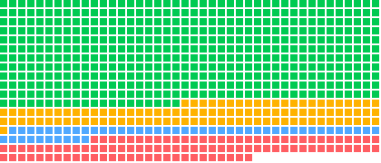

Security: what the directory checks, and what you should
No listed skill is security scanned by the directory, and every listing says so. This page explains what the directory does check before a skill is listed, what it leaves to you, what has gone wrong in other registries, and how to review a skill in a few minutes.

Every dot is a skill whose files the directory read in full.No credential, host or commandCredential or outside hostRuns commandsMCP server
What is checked before a skill is listed
Structure and license. Every SKILL.md passes a required frontmatter check and at least six of seven graded checks, declares a license and sits in a repository with a commit in the last year. The full method.
Listing policy. Skills whose job is to automate accounts on a social platform, work around CAPTCHAs or blocks, scrape third-party sites or collect personal data are not listed, nor are skills whose text trips the site's malware, jailbreak and adult-content filters.
What the files touch. For the 754 skills with full pages, the refresh reads every file in the folder and publishes a Before you install panel: bundled scripts, commands in SKILL.md, environment variables read, credential names mentioned, outside hosts, MCP tools and requested tool permissions.
Nothing runs. The refresh reads files only. No script from any listed repository is executed, and no skill is installed into an agent.
Counts from the October 22, 2026 snapshot. Filters marked install evidence count skills with saved install facts.
What is not checked
No malware scan. The directory does not run a pattern scanner, a dependency audit or a sandbox over third-party skills. A listing says what the files touch, never that they are safe.
No runtime test. Scores measure structural evidence in the published files. They say nothing about what a skill does once an agent follows it.
No certification. The Suede S shields are quality badges for scores of 80 to 99 on that structural rubric. They are not a security result, and the HOL and Cisco scanners that run on Suede AI's own repository in CI do not run on the listings.
skills.sh, which tracks 2,869 of the listed skills, publishes audit results from several scanning partners for the skills it indexes. Each full page here links to its skills.sh page when the skill is tracked there, so you can read those results beside the directory's own record. They are third-party results and the directory does not repeat them as its own.
Documented attacks on skill registries
Three reports from the last year, each linked to its source. They are the reason every listing here says what its files touch, and the reason you should read a skill before an agent does.
ToxicSkills
Snyk, February 2026
Snyk's researchers scanned 3,984 agent skills from ClawHub and skills.sh. Human review confirmed 76 skills with malicious payloads written into their Markdown instructions, and the audit found 1,467 skills, 36.82 percent of the set, with at least one security flaw; 13.4 percent carried critical-severity issues.
An audit of 2,857 skills on ClawHub, the OpenClaw registry, found 341 malicious skills. 335 of them posed as crypto trading tools and told macOS users to paste a command into Terminal that installed the Atomic macOS Stealer. Koi later counted 824 malicious skills as the registry passed 10,700.
A proof of concept, not an attack in the wild. Cato's researchers added a hidden helper to a copy of Anthropic's GIF creator skill. The user approved the visible script; the helper fetched and ran a ransomware payload under that same approval, which Cato calls the consent gap.
Open the skill's page here and read the Before you install panel. Scripts, commands, credentials and outside hosts should all be explained by what the skill is for.
Read SKILL.md on GitHub. It is instructions an agent will follow: look for text that tells the agent to fetch and run something, to ignore earlier rules, or to send data anywhere.
Open any bundled script. Short scripts are quick to read; long or obfuscated ones deserve a scanner or a pass.
Check the license and the publisher. Official publishers are marked; for everyone else, the repository's history and the curated lists that cite it are the context you have.
Install into a project, not globally, and run the agent with its normal permission prompts on. Treat the first session as a test.
What the scanners look for
The categories below are what automated skill scanners flag. Reading for them by hand catches most of what they catch.
Category
Signals
Code execution
Dynamic code evaluation, shell spawning and pipes that run whatever arrives on them.
Network
Hardcoded addresses, HTTP calls, sockets and DNS lookups that the skill's purpose does not explain.
File system
Paths that climb out of the project, and reads of home, SSH or browser profile folders.
Obfuscation
Base64 blobs, character-code strings and hex-encoded text where plain code would do.
Credentials
Key file reads, keychain access and loops over environment variables.
Persistence
Scheduled jobs, login items, startup scripts and service registrations.
Prompt injection
Instructions that override the user, impersonate the system or hide text in unusual characters.
Exfiltration
Environment variables or files sent to a URL the skill names.
Hidden helpers
Downloads at runtime, password-protected archives and files encrypted before use.
Supply chain
Remote scripts piped to a shell, package installs at runtime and post-install hooks.
skill-scanner from getsentry/skills (88/100): Scans agent skills for prompt injection, malicious scripts, excessive permissions, secret exposure, and supply chain risks before installation.
aig-scanner from Tencent/AI-Infra-Guard (82/100): Runs AI security scans of infrastructure, AI tools and skills, and AI agents, and evaluates LLM jailbreak resistance with Tencent's AI-Infra-Guard.
codeql from trailofbits/skills (92/100): Scans a codebase for security vulnerabilities using CodeQL's interprocedural data flow and taint tracking analysis, with run-all and important-only scan modes.
The HOL plugin scanner, which runs on Suede AI's own repository in CI with the Cisco skill scanner pinned alongside it.
Found a problem?
Open a listing request and choose a correction or a removal. Describe what you found and link the file; removals take effect at the next build. For Suede AI's own skills, follow the repository security policy.
Questions and answers
Does the directory scan skills for malware?
No. Every listing is marked "Security scan: not scanned". The directory reads each skill's published files to check structure, license and maintenance, and on full pages it lists what those files touch, but it runs no malware scanner over third-party code and executes nothing from any repository.
What does the Before you install panel show?
For the 754 skills with full pages, the refresh reads every file in the skill folder and records bundled scripts by language, commands its SKILL.md runs, environment variables its scripts read, credential names it mentions, outside hosts and HTTP clients, MCP tools, and the tool permissions its frontmatter requests. The panel on each page prints that record as of the snapshot date.
Which skills are the safest to start with?
Start with the 482 full-page skills marked No setup required: their files read no credential, call no outside host, connect to no MCP server and run no command. They are still third-party text that an agent will follow, so read the SKILL.md first.
How do I report a skill?
Open a listing request on GitHub and choose a correction or removal; describe what you found and link the file. Reports about Suede AI's own skills go through the repository's security policy.